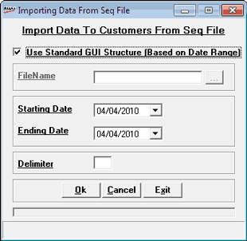

This option is used to load the customer information into the Shoper database. The input file can be of standard GUI structure and DOS format.
How to reach: Housekeeping > Data Import > Customer Information
The Importing Data From Seq File window is displayed.

Use Standard GUI Structure (Based on Date Range): Select, if the input file is in Standard GUI Structure. Unselect if it is a DOS format file.
If Use Standard GUI Structure (Based on Date Range) is unselected,
Enter File Name: Enter the customer information file name or select the file using the browse option
If Use Standard GUI Structure (Based on Date Range) is selected,
Starting Date: Enter the start date.
Ending Date: Enter the end date.
Delimiter: Enter the delimiter like comma, semicolon etc.,
Note: The files to be imported should have the naming pattern UsccDDMM.seq where scc = Shoper Company Code, DD = Date, MM = Month. The option looks for separate customer information files for each day for the given range of dates. When the file is not found for a particular day, appropriate message will be displayed and you will have a choice to continue importing with the files for remaining dates.